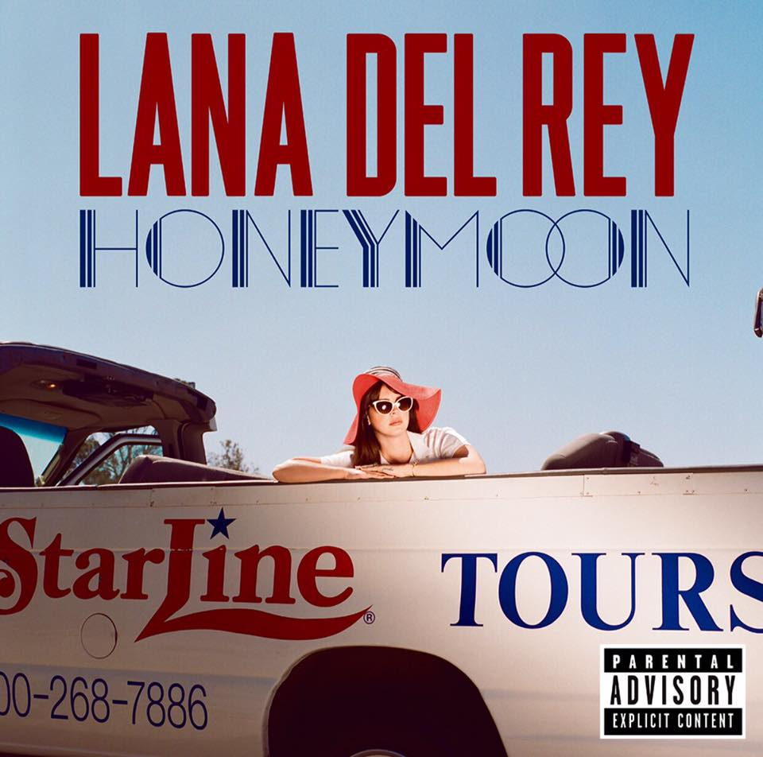

LANA DEL REY
LANA DEL REY
Uma experiência de romance,
melancolia e cinema.
Honeymoon é o quarto álbum de estúdio de Lana Del Rey, lançado em 18 de setembro de 2015. Sua sonoridade mistura elementos do jazz, pop orquestral e música cinematográfica.
Conheça o álbum →
Mais do que apenas um conjunto de músicas, Honeymoon cria uma atmosfera única, misturando romance, melancolia, cinema e diferentes sentimentos.
Conheça o álbum →Honeymoon
Music to Watch Boys To
Terrence Loves You
God Knows I Tried
High by the Beach
Freak
Lana Del Rey, nome artístico de Elizabeth Woolridge Grant, é uma cantora e compositora norte-americana conhecida por sua voz marcante e por músicas que exploram sentimentos como amor, nostalgia e melancolia.
Conheça Lana →Durante a divulgação do álbum, uma linha telefônica permitia que fãs ouvissem músicas e outros conteúdos.
Honeymoon é um álbum que vai muito além do seu nome. Suas músicas passam por sentimentos como solidão, desejo, perda, liberdade e saudade.
Ler conclusão →